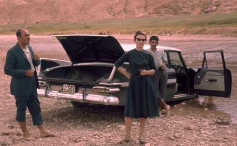
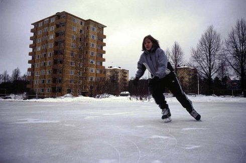

ARTIST IN FOCUS: MIRANDA PENNELL
thursday june 8th 7 p.m. filmmuseum münchenattending: Miranda Pennell
Texts are partly taken from Miranda
Pennell's Website
Download
programme (PDF, in German)
I. choreographies of presence (1995-2007)
British artist Miranda Pennell (b. in 1963 in London) studied Contemporary Dance in New York and Amsterdam and later Visual Anthropology in London. Both sides, the performing body and theoretical ideas, come togehter in her films, shaping reality as phenomenons of social habits. Such Pennell's work has circled around ritual performance from two directions: cultural play, particularly by teenagers, who drum (DRUM ROOM, 2007), dance (YOU MADE ME LOVE YOU, 2005) and skate (MAGNETIC NORTH, 2003) across her shorts; and in rehearsals of violence, both formal and informal, in the military drill of TATTOO (2001) and the Western bar brawl-meets-football casuals punch-up of FISTICUFFS (2004).

II. film as an archive (from 2010)
These flocking formations of human behaviour have both informed and transmuted her more recent practice, which involves deep researchinto archival images of British colonialism. Her performative ethnography of white British/European culture – its weekend fights and secret art-making –hones her close observation in WHY COLONEL BUNNY WAS KILLED (2010). Obsessively re-reading a photograph captioned, the filmelicits thoughtful parallels between the late 19th-century British presence on India's North West frontier and the 21st-century illegal invasion ofAfghanistan and its impact on the same area. The archival footage takes the place of the performances Pennell staged and filmed in previous work, offeringan equal – and equally telling – historiographic, and even psychoanalytic, insights into gestural and cultural repetition.

COLONEL BUNNY and Pennell's first feature THE HOST (2015) form something of a diptych, not only in their use of archival material, but in the location of that archival material in response to Pennell's own family history, and her desire to interrogate and interrupt the repetition of colonialism through the generations. In revealing the process of using family materials, the films take a position that is at once subjective and intimate; enabled by this, they also speak more generally (and generatively) of a shared colonial past that continues its effects in the present.
UNDERDOX half-time presents a selection from her cinematographic work as well as her two recent films.
Miranda Pennell will attend the festival and present her work within a film lecture.
Thursday, June 8th, 7 p.m., Filmmuseum München
